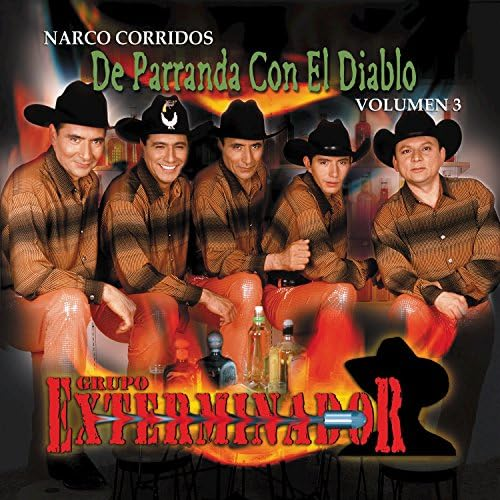
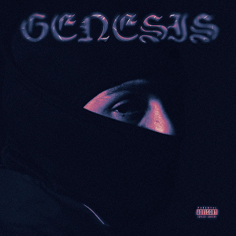

Vibras de Noche
Eslabon Armado

| Track No | Song Name | Duration |
|---|---|---|
| 1 | Dame Tu Calor | 2:40 |
| 2 | Me Prendes | 2:55 |
| 3 | Te Encontré | 2:52 |
| 4 | Me Dejaste Dolido | 2:52 |
| 5 | La Mejor de Todas | 2:44 |
| 6 | Me Va a Extrañar | 2:37 |
| 7 | Pena Amor | 2:42 |
| 8 | Con Tus Besos | 3:03 |
| 9 | Mi Vicio | 2:39 |
| 10 | Sin Nada Que Decir | 2:49 |
| 11 | Tal Vez | 3:11 |
| 12 | Lo Aprendí de Ti | 2:56 |
| 13 | Tu Veneno Mortal | 3:17 |
| 14 | La Mejor de Todas (Versión Acústica) | 2:48 |
Narco Corridos, Vol. 3: De Parranda Con El Diablo
Grupo Exterminador

| Track No | Song Name | Duration |
|---|---|---|
| 1 | De Parranda Con el Diablo | 3:00 |
| 2 | Comando del Diablo | 2:42 |
| 3 | El Chapo de Sinaloa | 2:35 |
| 4 | Vengo a Aclarar | 3:00 |
| 5 | El Gavilán Pollero | 3:00 |
| 6 | Los 3 Cholos | 2:41 |
| 7 | Los Primos | 2:43 |
| 8 | Mi Buen Amigo | 2:46 |
| 9 | El 411 | 2:38 |
| 10 | Corridos Pesados | 3:18 |
| 11 | Corridos de Verdad | 3:11 |
| 12 | Las Tundras del Diablo | 2:55 |
| 13 | Los Narcos | 2:45 |
| 14 | Mi Última Parranda | 2:53 |
GÉNESIS
Peso Pluma

| Track No | Song Name | Duration |
|---|---|---|
| 1 | Rosa Pastel (feat. Jasiel Nuñez) | 3:03 |
| 2 | Luna (feat. Jasiel Nuñez) | 3:14 |
| 3 | 77 (feat. Eladio Carrión) | 2:38 |
| 4 | Rompe la Dompe (feat. Junior H) | 2:38 |
| 5 | Bye | 3:03 |
| 6 | La People II (feat. Tito Double P & Joel De La P) | 3:40 |
| 7 | Rubicon | 2:52 |
| 8 | Las Morras (feat. Blessd) | 2:33 |
| 9 | VVS (feat. Edgardo Nuñez) | 2:37 |
| 10 | Tuluminati | 2:48 |
| 11 | Lady Gaga (feat. Gabito Ballesteros & Junior H) | 2:42 |
| 12 | Lagunas | 2:36 |
| 13 | Carnal | 2:32 |
| 14 | Especial | 3:19 |
| 15 | Lagrimas | 3:17 |
| 16 | PRC (feat. Natanael Cano) | 2:42 |
| 17 | AMG (feat. Natanael Cano & Gabito Ballesteros) | 3:15 |